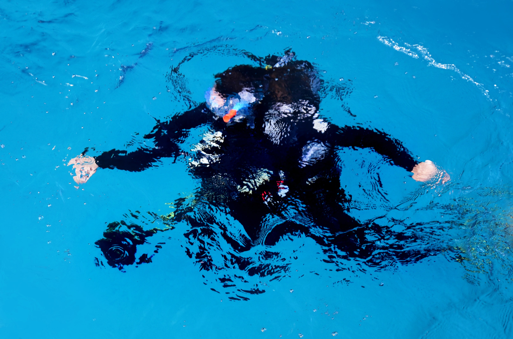

My name is Emezi Nnaemeka Success
I'm a front end developer from imo state Nigeria
My Mission
I believe that humor combined with slick design and a creative
use of technology can make complicated ideas more understandable
and products more fun. My mission is to bring great ideas to life
and help others do the same...
Capabilities:
CREATING APIs:

This is one the part of development
that i love so much
and i find so much joy working on it.
WEB DEVELOPMENT:
Actually web development is what attracted me
to find imterest in programming
and it is the first thing i learnt,
FOOTBALL:
Apart from I.T works, am also a
player when it comes to football
i derive so much joy when doing that...
OTHERS:
there are various things i can do
but the main thing is, am a problem
solver...